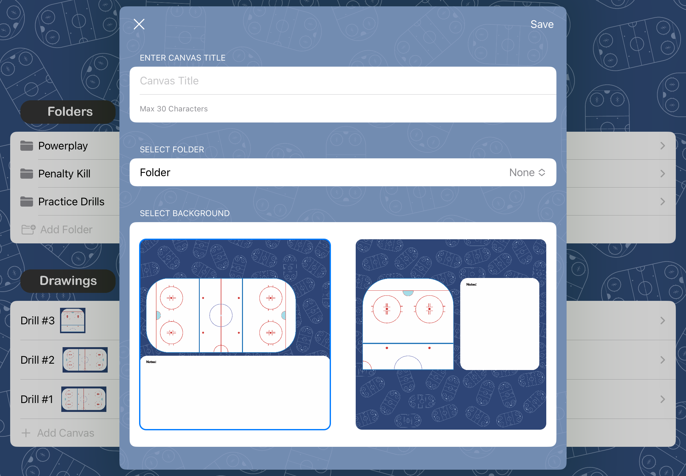

Michael Lane
Michael Lane
Michael Lane
Michael Lane

Users can view a list of folders and individual drawings, each represented by custom icons and preview images. They can create new folders to organize their drawings or start a new drawing directly from the home screen. Users can also navigate into specific folders or drawings, and have the option to delete items with prompts for confirmation, ensuring their content is managed efficiently.
When creating a new drawing, users are presented with three different prompts: Name, Folder, Image. Names must be less than 30 characters and cannot be empty, folder is set to 'None' by default, and there are two template images for the user to choose from.
This application utlizes Apple's PencilKit. PencilKit provides a drawing environment that receives input from an Apple Pencil or the user’s finger. Users are able to select a variety of options from the PencilKit, and they are free to move it to any of the four sides of the screen. Designs are automatically saved within the application, and can also be downloaded to the camera roll.
Other Features
Similar to adding a new drawing, folder names must be less than 30 characters and cannot be empty.
When users select to add a new canvas within a folder, a separate view appears with prompts for name and template image.
When a user deletes a folder, an alert appears asking if they would like to just delete the folder, or delete the folder and the drawings inside of it.
If they choose to only delete the folder, the drawings within are moved to the homescreen.
Users are asked to authorize access to camera roll when first opening the application.
Application repeats request anytime the user tries to save a design without giving access first.